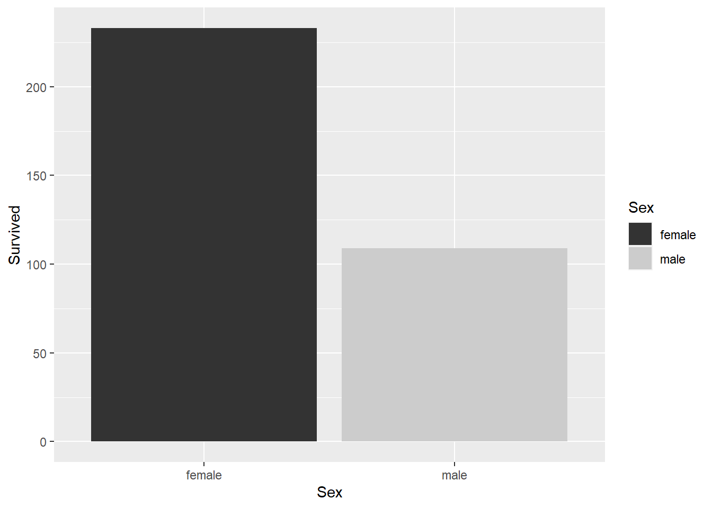
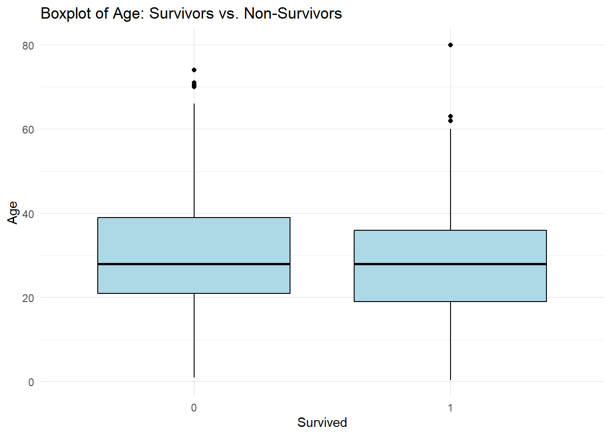
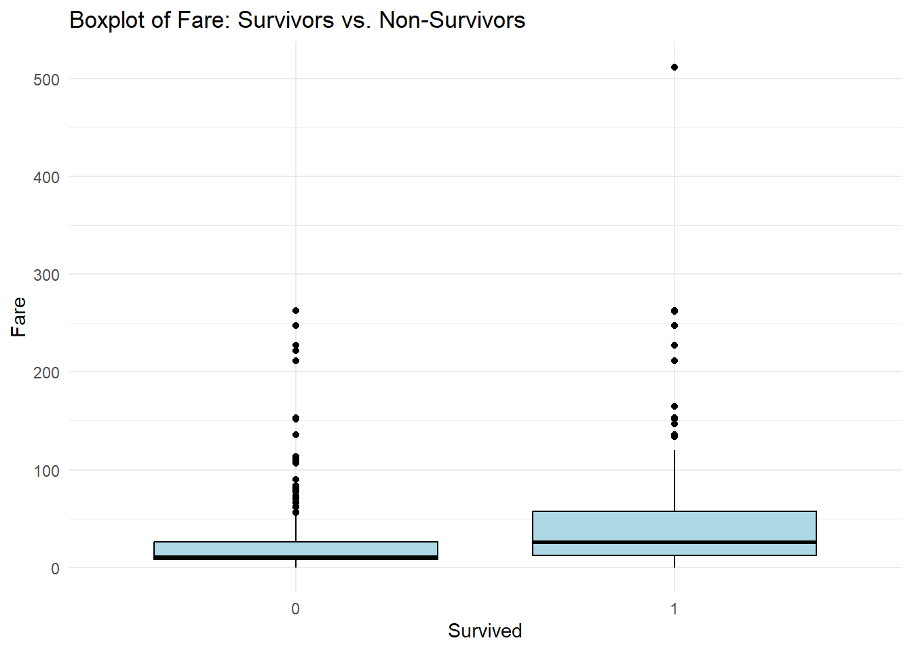
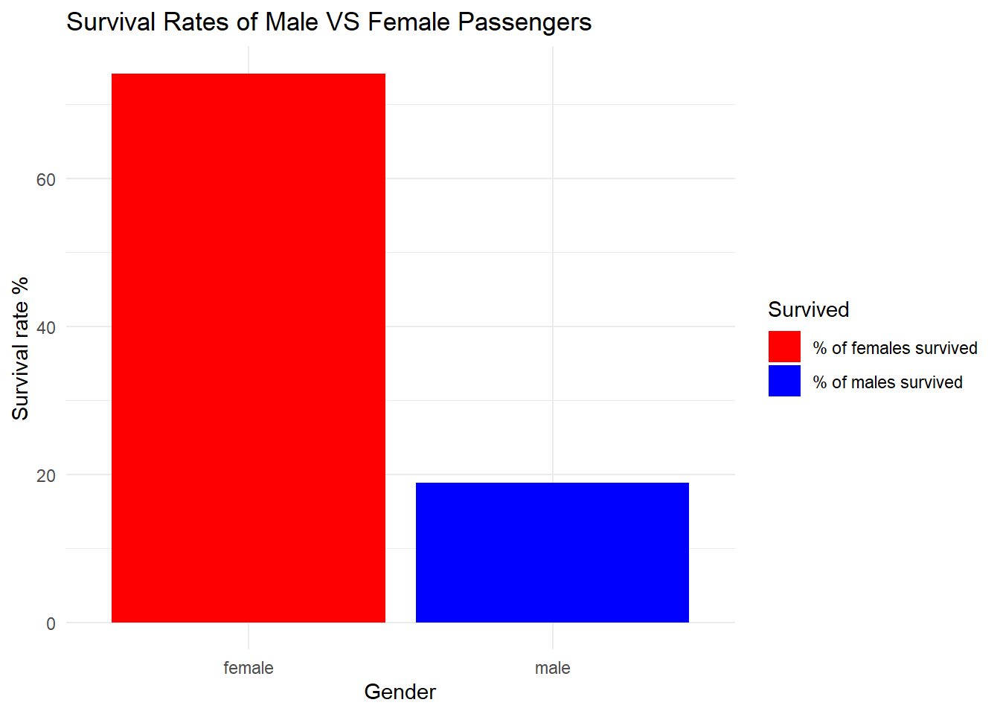
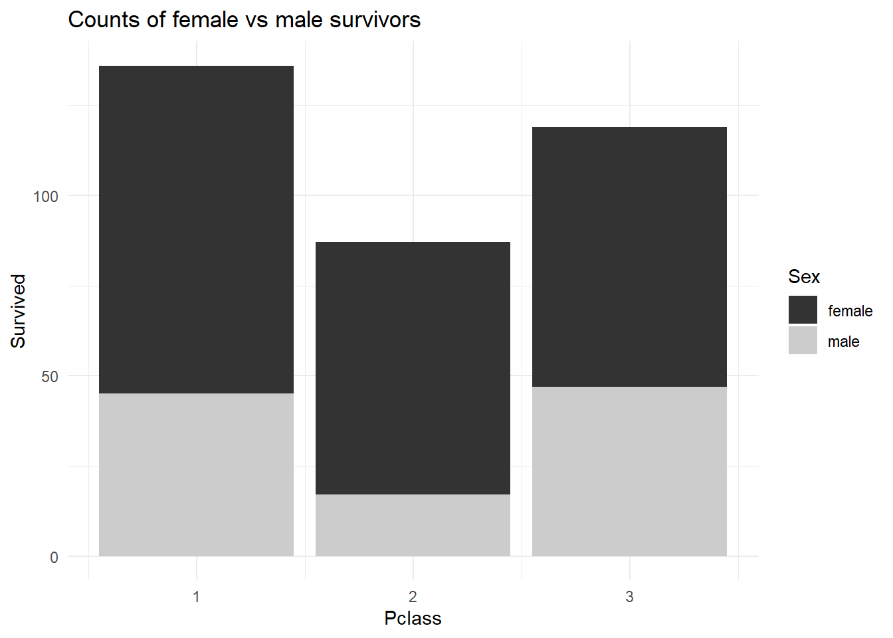
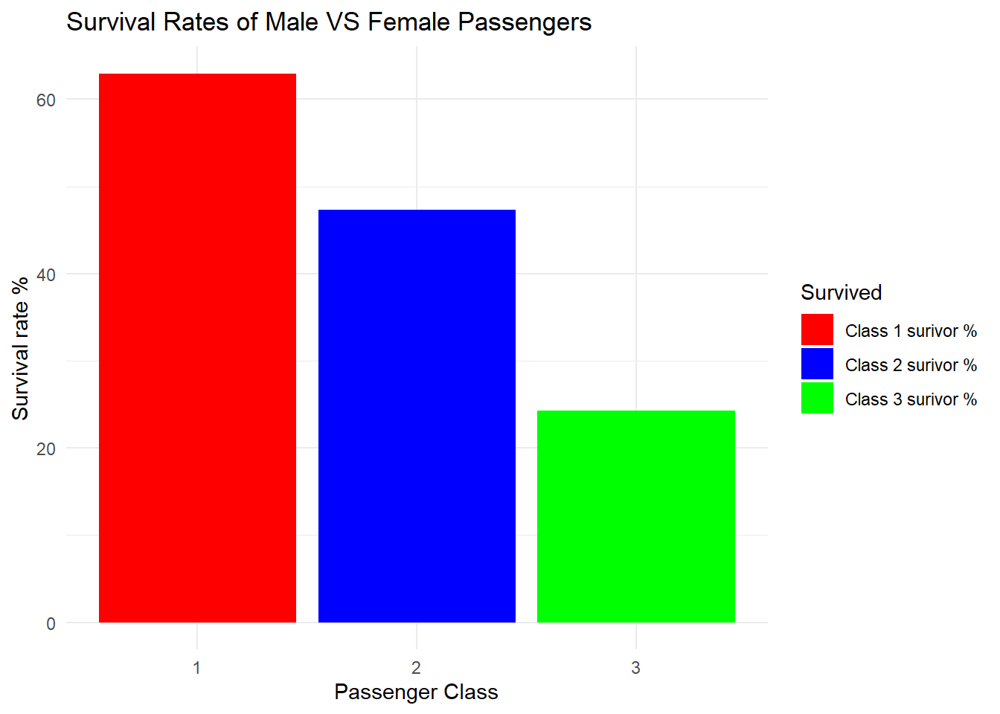
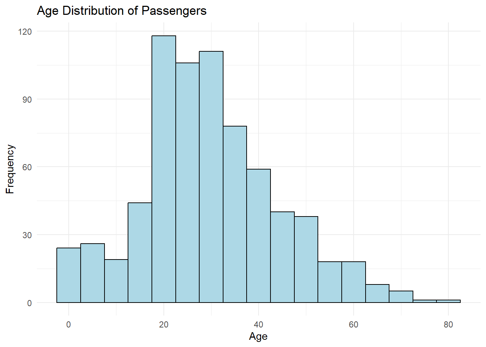
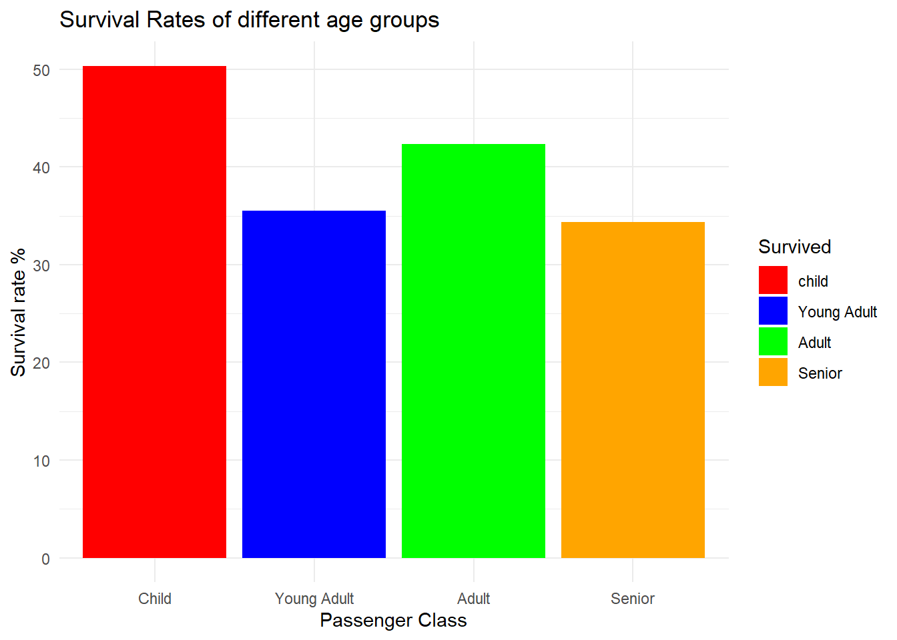
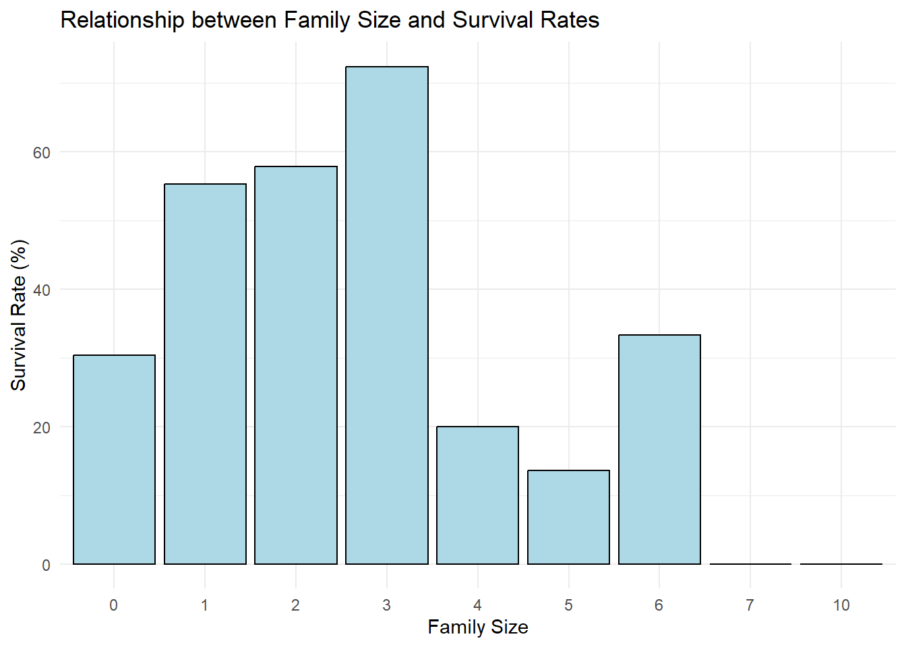

library(tidyverse)
library(ggplot2)
knitr::opts_chunk$set(echo = TRUE, warning=FALSE, message=FALSE)Final Project: Abhinav Reddy Yadatha
final_Project
Final Project writeup
Part 1. Introduction
Project Topic: The project aims to analyze the factors influencing the survival of passengers aboard the RMS Titanic during its tragic maiden voyage in 1912.
General Research Question: What were the determinants of survival among the passengers on the Titanic?
Dataset Description: The project utilizes the Titanic dataset, a well-known and frequently used dataset in data analysis and machine learning tasks. This dataset is derived from the passenger manifest of the RMS Titanic and has been curated by various organizations and individuals for educational and research purposes. Each row in the dataset represents a passenger who was aboard the Titanic during its ill-fated voyage.
The dataset includes a range of variables such as the passenger’s name, age, gender, passenger class, ticket fare, cabin number, port of embarkation, survival status, and more. These attributes were collected from passenger records, survivor interviews, and historical documents related to the disaster. The dataset encompasses both survivors and non-survivors, with the survival status column indicating whether a passenger survived (labeled as “1”) or did not survive (labeled as “0”) the sinking of the Titanic.
Unit of Analysis: In the Titanic dataset, each case or unit of analysis refers to an individual passenger who was on board the Titanic. The dataset contains information for 891 passengers, with each row representing a unique passenger and the associated attributes.
The project aims to explore the relationships between various factors such as gender, age, passenger class, family size, and cabin location with the survival outcome. By analyzing this dataset, we can gain insights into the demographics and characteristics of the passengers, investigate the impact of different variables on survival rates, and uncover patterns and correlations that shed light on the tragic events of the Titanic disaster.
Part 2. Background of the Topic/Literature Review
The sinking of the Titanic in 1912 remains a captivating and tragic event in history. By analyzing the factors that influenced the survival of its passengers, we can gain valuable insights into the social dynamics, inequalities, and decision-making processes of that time. Exploring the Titanic dataset allows us to uncover patterns and correlations that have practical implications for emergency preparedness today. Understanding the determinants of survival on the Titanic not only deepens our knowledge of this historic event but also offers lessons for enhancing safety and well-being in future crises.
Part 3. Dataset Introduction
The Titanic dataset is a widely recognized and extensively used dataset for data analysis and machine learning purposes. It originates from the passenger manifest of the RMS Titanic, a British passenger liner that tragically sank during its inaugural voyage in April 1912. Numerous organizations and individuals have carefully compiled and organized the dataset for educational and research applications based on the real-life incident. Each row in the dataset corresponds to an individual passenger who was on board the Titanic during its ill-fated journey. The dataset comprises various attributes pertaining to the passengers, including their names, ages, genders, passenger classes, ticket fares, cabin numbers, ports of embarkation, survival status, and more. These attributes were gathered from passenger records, survivor interviews, and historical documents related to the disaster. The dataset encompasses both survivors and non-survivors, with the survival status column denoting whether a passenger survived (labeled as “1”) or did not survive (labeled as “0”) the sinking of the Titanic.
Part 4. Dataset Description
(Story) This dataset contains a total of 891 rows and 12 columns and the descriptive information about what each of the 12 fields are given below :
PassengerId: A unique identifier assigned to each passenger. Survived: Indicates whether the passenger survived the sinking or not (0 = No, 1 = Yes). Pclass: Represents the passenger class (1 = 1st class, 2 = 2nd class, 3 = 3rd class). Name: The name of the passenger. Sex: The gender of the passenger (Male or Female). Age: The age of the passenger in years (some values may be missing). SibSp: The number of siblings/spouses aboard the Titanic. Parch: The number of parents/children aboard the Titanic. Ticket: The ticket number of the passenger. Fare: The fare or ticket price paid by the passenger Cabin: The cabin number assigned to the passenger (some values may be missing). Embarked: The port of embarkation (C = Cherbourg, Q = Queenstown, S = Southampton).
Coding Component:
- Read the titanic dataset;
#read and get a overview of the data
data <- read_csv("AbhinavReddyYadatha_FinalProjectData/titanic.csv")
view(data)Descriptive information of the titanic dataset :
::: {.cell}
# Checking the dimensions of the data dim(data)::: {.cell-output .cell-output-stdout}
[1] 891 12:::# checking the unique age group count length(unique(data$Age))::: {.cell-output .cell-output-stdout}
[1] 89:::#printing out the first few examples head(data)::: {.cell-output-display}
::: :::
Conduct summary statistics of the dataset :
# Displaying the summary of the titanic data
summary(data) PassengerId Survived Pclass Name
Min. : 1.0 Min. :0.0000 Min. :1.000 Length:891
1st Qu.:223.5 1st Qu.:0.0000 1st Qu.:2.000 Class :character
Median :446.0 Median :0.0000 Median :3.000 Mode :character
Mean :446.0 Mean :0.3838 Mean :2.309
3rd Qu.:668.5 3rd Qu.:1.0000 3rd Qu.:3.000
Max. :891.0 Max. :1.0000 Max. :3.000
Sex Age SibSp Parch
Length:891 Min. : 0.42 Min. :0.000 Min. :0.0000
Class :character 1st Qu.:20.12 1st Qu.:0.000 1st Qu.:0.0000
Mode :character Median :28.00 Median :0.000 Median :0.0000
Mean :29.70 Mean :0.523 Mean :0.3816
3rd Qu.:38.00 3rd Qu.:1.000 3rd Qu.:0.0000
Max. :80.00 Max. :8.000 Max. :6.0000
NA's :177
Ticket Fare Cabin Embarked
Length:891 Min. : 0.00 Length:891 Length:891
Class :character 1st Qu.: 7.91 Class :character Class :character
Mode :character Median : 14.45 Mode :character Mode :character
Mean : 32.20
3rd Qu.: 31.00
Max. :512.33
Exploring the variables of the dataset :
Variable : Sex
# Count the number of males and females
gender_counts <- table(data$Sex)
# Display the counts
gender_counts
female male
314 577 # Calculate the total number of passengers
total_passengers <- nrow(data)
# Calculate the number of female passengers
male_passengers <- sum(data$Sex == "male")
# Calculate the percentage of females
percentage_males <- (male_passengers / total_passengers) * 100
# Display the percentage of females
percentage_males[1] 64.7587This variable refers to the gender of the passenger. It can be observed that there are 314 females and 577 males. Hence, the majority of the proportion of males is higher , in fact it’s a staggering ‘64.7587%’.
Variable : Survived
# Count the number of passengers survived.
survived_counts <- table(data$Survived)
# Display the counts
survived_counts
0 1
549 342 # Calculate the number of survived passengers
survived_passengers <- sum(data$Survived == "1")
# Calculate the percentage of survived passengers
percentage_survived <- (survived_passengers / total_passengers) * 100
# Display the percentage of survived passengers
percentage_survived[1] 38.38384This variable indicates if a passenger has survived or not, it can be observed that only 342 passengers survived out of the total of 891 passengers. The survival rate of the titanic was just a mere 38.38384 %
Variable Pclass:
# Count the number of passengers in each passenger class
pclass_counts <- table(data$Pclass)
# Display the counts
pclass_counts
1 2 3
216 184 491 It can be observed that a majority of the passengers were travelling in class 3, then class 1 and the least in class 2.
Variable : Fare
# Find the maximum fare
max_fare <- max(data$Fare, na.rm = TRUE)
# Find the minimum fare
min_fare <- min(data$Fare, na.rm = TRUE)
# Display the maximum and minimum fare
max_fare[1] 512.3292min_fare[1] 0# Calculate the mean fare
mean_fare <- mean(data$Fare, na.rm = TRUE)
# Display the mean fare
mean_fare[1] 32.20421From the analysis above it can be observed that there were passengers who did not have to pay any fare whereas others had to pay a maximum of 512.3292. The mean fare paid by the passengers is 32.20421 USD.
Variable Age :
# Find the maximum age
max_age <- max(data$Age, na.rm = TRUE)
# Find the minimum age
min_age <- min(data$Age, na.rm = TRUE)
# Display the maximum and minimum age
max_age[1] 80min_age[1] 0.42# Calculate the mean age
mean_age <- mean(data$Age, na.rm = TRUE)
# Display the mean age
mean_age[1] 29.69912There were people from all ages on the titanic. The maximum age being 80 and the minimum age being 0.42 while the mean age is 29.69912 ~ 30 years.
Part 5. Analysis Plan
Specific questions :
What was the overall survival rate of passengers aboard the Titanic?
How does the survival rate vary based on passenger gender?
Did the passenger class have an impact on the survival rate?
What were the survival rates for passengers with family members aboard the Titanic versus those traveling alone
How does the survival rate differ among different age groups or passenger classes?
What was the distribution of ages among the passengers, and did age play a role in survival?
How does the ticket fare correlate with the passenger class and survival?
Analysis Plan :
To answer the research questions mentioned above, I plan to conduct a combination of data analysis and visualization techniques.
Descriptive Statistics: I will calculate summary statistics such as means, medians, and proportions to provide an overview of the variables of interest, including survival rates based on different categories.
Bar Charts: I will create bar charts to visualize the relationship between categorical variables (e.g., passenger class, gender, port of embarkation) and survival rates. This will allow for a quick comparison of survival probabilities across different categories.
Histograms : I will use histograms to explore the distribution of continuous variables (e.g., age, fare) for both survivors and non-survivors. This will help identify any patterns or differences in the distributions between the two groups.
Boxplots: Boxplots will be used to compare the median age and fare of survivors and non-survivors, providing insights into potential differences in these variables.
Data Analyses I plan to do for this project are as follows :
Survival Rate Analysis:
Calculate the overall survival rate of passengers (percentage of survivors) to provide an initial understanding of survival outcomes.
Gender-based Analysis:
Compare the survival rates of male and female passengers using a bivariate visualization (such as a bar chart or stacked bar plot) to explore the potential impact of gender on survival.
Passenger Class Analysis:
Examine the survival rates across different passenger classes (first, second, and third) using visualizations (such as a stacked bar chart) to investigate the relationship between socio-economic status and survival.
Age Distribution Analysis:
Plot the age distribution of passengers using a histogram to visualize the age groups and identify any patterns or trends in survival rates within different age ranges.
Family Size Analysis:
Investigate the relationship between family size (based on the SibSp and Parch variables) and survival rates using a bivariate visualization (such as a scatter plot or grouped bar chart) to explore the impact of traveling with family members on survival.
Bivariate Visualization:
Bivariate visualizations, such as bar charts or stacked bar plots, are useful for comparing two variables, such as gender and survival or passenger class and survival. They allow us to visually examine the relationship between two categorical variables and observe any patterns or differences in survival rates based on these variables.
Scatter Plot:
Scatter plots are valuable for analyzing the relationship between two continuous variables, such as family size and survival rates. They enable us to observe the dispersion of data points and determine if there is any correlation or trend between the variables.
Box Plot :
Box plots are excellent for comparing the distribution of a continuous variable, such as fare, between different groups (e.g., survivors vs. non-survivors). They provide a visual representation of the median, quartiles, and outliers in the data, allowing us to detect any variations or differences in fare distributions based on survival outcomes.
Calculating Age Groups:
Grouping passengers into age categories: You can create a new variable called “Age Group” by categorizing the passengers’ ages into different groups, such as “Child,” “Adult,” and “Elderly.” This can be done by specifying age ranges and using conditional statements or the cut() function in R. Converting Categorical Variables:
Mapping categorical variables to numerical values: If any categorical variables, such as “Sex” or “Embarked,” are represented as text, you can create new variables that map these categories to numerical values. For example, you can create a new variable called “Sex_Code” where “male” is encoded as 0 and “female” as 1. Calculating Family Size:
Creating a variable for family size: You can create a new variable called “Family Size” by summing the “SibSp” (number of siblings/spouses aboard) and “Parch” (number of parents/children aboard) variables. This new variable represents the total number of family members a passenger had onboard.
If any column has too much empty data, I plan to drop it completely as it would not contain a lot of information.
Part 6. Survival Rate Analysis and Visualization
# Calculate summary statistics for continuous variables
summary(data$Age) # Summary statistics for age Min. 1st Qu. Median Mean 3rd Qu. Max. NA's
0.42 20.12 28.00 29.70 38.00 80.00 177 summary(data$Fare) # Summary statistics for fare Min. 1st Qu. Median Mean 3rd Qu. Max.
0.00 7.91 14.45 32.20 31.00 512.33 # Calculate summary statistics for categorical variables
table(data$Sex) # Frequency count for gender
female male
314 577 table(data$Pclass) # Frequency count for passenger class
1 2 3
216 184 491 table(data$Survived) # Frequency count for survival status
0 1
549 342 # Calculate survival rates based on different categories
survival_rates_gender <- prop.table(table(data$Survived, data$Sex), margin = 2) * 100
survival_rates_class <- prop.table(table(data$Survived, data$Pclass), margin = 2) * 100
# Display survival rates w.r.t gender and class
survival_rates_gender
female male
0 25.79618 81.10919
1 74.20382 18.89081survival_rates_class
1 2 3
0 37.03704 52.71739 75.76375
1 62.96296 47.28261 24.23625From the above statistics, it can be observed that approximately 75% of females have survived the tragedy whereas only nearly 19% of men have survived. A trend could be identified about the gender and the survival rate. In addition to this, based on the class it is observed that people who were in class 1 had a significantly higher survival rate compare to that of class 2 and class 3.
Analysis :
Research Question analysed : How does the survival rate vary based on passenger gender?
# count of survivors by gender
ggplot(data, aes(x=Sex, y=Survived, fill=Sex)) +
geom_bar(stat="identity")+
scale_fill_grey()
ggtitle("Survival counts of Male and Female Passengers") +
ggtitle("Counts of female vs male survivors") +
theme_minimal()Error in ggtitle("Survival counts of Male and Female Passengers") + ggtitle("Counts of female vs male survivors"): non-numeric argument to binary operatorResearch Analysed: Median age and fare from survivors and non-survivors.
# Create boxplots comparing the median age and fare between survivors and non-survivors
ggplot(data, aes(x = factor(Survived), y = Age)) +
geom_boxplot(fill = "lightblue", color = "black") +
labs(x = "Survived", y = "Age", title = "Boxplot of Age: Survivors vs. Non-Survivors") +
theme_minimal()
ggplot(data, aes(x = factor(Survived), y = Fare)) +
geom_boxplot(fill = "lightblue", color = "black") +
labs(x = "Survived", y = "Fare", title = "Boxplot of Fare: Survivors vs. Non-Survivors") +
theme_minimal()
From the boxplots comparing the median age and fare between survivors and non-survivors, we can infer the following:
Age: The median age of survivors appears to be slightly lower than that of non-survivors. This suggests that there may have been a higher proportion of younger passengers who survived the Titanic disaster. However, it’s important to note that the difference in median age might not be substantial.
Fare: The median fare of survivors seems to be slightly higher compared to non-survivors. This indicates that passengers who paid higher fares might have had a better chance of survival. It’s possible that higher-paying passengers were assigned to more favorable locations on the ship or had access to better life-saving resources.
These inferences are based on the central tendency represented by the median values in the boxplots. However, it’s essential to conduct further statistical analysis to validate these observations.
library(ggplot2)
# Calculate the survival rates by gender
survival_rates_gender <- prop.table(table(data$Survived, data$Sex), margin = 2) * 100
df <- as.data.frame(survival_rates_gender)
subset_df <- subset(df, Var1 == 1)
subset_df# Create a bar chart to compare survival rates by gender
ggplot(data = subset_df, aes(x=Var2, y=Freq, fill=Var2)) +
geom_bar(stat = "identity", position = "stack") +
labs(x = "Gender", y = "Survival rate %", fill = "Survived") +
scale_fill_manual(values = c("red", "blue"), labels = c("% of females survived", "% of males survived")) +
ggtitle("Survival Rates of Male VS Female Passengers") +
theme_minimal()
From the above analyses, it is observed that despite the fact that there are males than compard to females, gender could be treated as an indicator survival chance. This is due to the fact that females on titanic had a survival rate of 74 % whereas the males on the same boat only had 18%.
Research question answered : Passenger Class Analysis Examine the survival rates across different passenger classes (first, second, and third) using visualizations (such as a Stacked bar chart) to investigate the relationship between socio-economic status and survival.
# count of survivors by passenger class via stacked bar graph
ggplot(data, aes(x=Pclass, y=Survived, fill=Sex)) +
geom_bar(stat="identity")+
scale_fill_grey()+
ggtitle("Survival counts of Male and Female Passengers") +
ggtitle("Counts of female vs male survivors") +
theme_minimal()
library(ggplot2)
# Bar graph to determine the relationship between survival and socio-economic status
# Calculate the survival rates by passenger class
survival_rates_pclass <- prop.table(table(data$Survived, data$Pclass), margin = 2) * 100
df <- as.data.frame(survival_rates_pclass)
subset_df <- subset(df, Var1 == 1)
subset_df# Create a bar chart to compare survival rates by gender
ggplot(data = subset_df, aes(x=Var2, y=Freq, fill=Var2)) +
geom_bar(stat = "identity", position = "stack") +
scale_fill_grey() +
scale_fill_manual(values = c("red", "blue", "green"), labels = c("Class 1 surivor %", "Class 2 surivor %", "Class 3 surivor %"))+
labs(x = "Passenger Class", y = "Survival rate %", fill = "Survived") +
ggtitle("Survival Rates of Male VS Female Passengers") +
theme_minimal()
Two observations are made : 1. The number of passengers in class1 are significantly higher than the passengers in class 2 and class 3. 2. Despite having such high numbers, it is observed that the class 1 passengers have the highest rate of survival indicating that the passenger class type played a very important role in determining the survival.
Research question analysed : Age Distribution Analysis:
Plot the age distribution of passengers using a histogram to visualize the age groups and identify any patterns or trends in survival rates within different age ranges.
# Create a histogram of the age distribution
library(ggplot2)
ggplot(data, aes(x = Age)) +
geom_histogram(binwidth = 5, fill = "lightblue", color = "black") +
labs(x = "Age", y = "Frequency") +
ggtitle("Age Distribution of Passengers") +
theme_minimal()
The age groups are all discrete, so we would not be in a position to analyse. So we will mutate the age column into age groups and analyse accordingly.
# Mutate the 'Age' column into age groups
data$AgeGroup <- cut(data$Age, breaks = c(0, 18, 30, 50, Inf),
labels = c("Child", "Young Adult", "Adult", "Senior"))
head(data)# For example, calculate the survival rate by age group
survival_rates_agegroup <- prop.table(table(data$Survived, data$AgeGroup), margin = 2) * 100
# Print the resulting table
survival_rates_agegroup
Child Young Adult Adult Senior
0 49.64029 64.44444 57.67635 65.62500
1 50.35971 35.55556 42.32365 34.37500# For example, calculate the survival rate by age group
survival_rates_agegroup <- prop.table(table(data$Survived, data$AgeGroup), margin = 2) * 100
df <- as.data.frame(survival_rates_agegroup)
subset_df <- subset(df, Var1 == 1)
subset_df# Create a bar chart to compare survival rates by gender
ggplot(data = subset_df, aes(x=Var2, y=Freq, fill=Var2)) +
geom_bar(stat = "identity", position = "stack") +
scale_fill_grey() +
scale_fill_manual(values = c("red", "blue", "green", "orange"), labels = c("child", "Young Adult", "Adult", "Senior"))+
labs(x = "Passenger Class", y = "Survival rate %", fill = "Survived") +
ggtitle("Survival Rates of different age groups") +
theme_minimal()
While, it can be observed that the children have the highest survival rate and seniors have the lowest rate, it is inconclusive to say whether the age factor is a factor affecting the chance of survival as all of them are pretty close. Due to the lack of this significant gap, I am ruling out Age as an definite factor affecting the survival.
Research Question Analysed : Family Size Analysis:
Investigate the relationship between family size (based on the SibSp and Parch variables) and survival rates using a bivariate visualization (such as a scatter plot or grouped bar chart) to explore the impact of traveling with family members on survival.
# Grouped bar chart
# Calculate the total family size by adding 'SibSp' and 'Parch'
data$FamilySize <- data$SibSp + data$Parch
# Calculate the survival rate by family size
survival_rates <- aggregate(Survived ~ FamilySize, data = data, FUN = function(x) sum(x) / length(x) * 100)
# Create a grouped bar chart of survival rates by family size
ggplot(survival_rates, aes(x = as.factor(FamilySize), y = Survived)) +
geom_bar(stat = "identity", fill = "lightblue", color = "black") +
labs(x = "Family Size", y = "Survival Rate (%)") +
ggtitle("Relationship between Family Size and Survival Rates") +
theme_minimal()
From the grouped bar chart that visualizes the relationship between family size and survival rates, we can infer the following:
Survival rates tend to be higher for passengers traveling with a small family size. As the family size increases, the survival rates generally decrease. Passengers who were traveling alone (family size of 0) have a relatively lower survival rate compared to those with small family sizes (1-3). This suggests that having a few family members onboard might have provided some level of support or assistance during the Titanic disaster. Larger family sizes (4 and above) generally have lower survival rates, indicating that it might have been more challenging to navigate and escape the sinking ship with a larger group. The highest survival rate is observed for passengers with a family size of 3, while the lowest survival rate is observed for passengers with a family size of 7 or more. Overall, this visualization suggests that the family size of passengers aboard the Titanic had an impact on their chances of survival.
Part 7. Conclusion and Discussion :
In this analysis of the Titanic dataset, we explored various aspects related to the survival of passengers. Here is a summary of our findings:
Overall Survival Rate: The overall survival rate of passengers was approximately 38.38%. This means that out of all the passengers in the dataset, around 38.38% survived the Titanic disaster.
Gender and Survival: We observed that females had a significantly higher survival rate compared to males. The survival rate for females was approximately 74.20%, while for males it was around 18.89%. This suggests that gender played a significant role in determining the chances of survival, with females having a higher likelihood of surviving.
Age and Survival: Analyzing the age groups, we noticed that there was no clear pattern of age influencing survival rates. However, younger passengers (children and adolescents) seemed to have a slightly higher survival rate compared to other age groups.
Family Size and Survival: Examining the relationship between family size (based on SibSp and Parch variables) and survival rates, we found that passengers traveling with larger families had lower chances of survival. This indicates that having a larger family onboard might have posed challenges in terms of coordination and accessing life-saving resources
In summary, gender, family size, and fare were found to be factors that influenced survival rates on the Titanic. Females, passengers with smaller families, and those who paid higher fares had higher chances of surviving the disaster. These findings align with historical accounts and popular narratives about the Titanic tragedy.
Variables such as cabin number, had a substantial number of missing values, we tackled this issue by not doing any sort of analysis for it as it wont be very fruitful.
Part 8. Bibliography :
Dataset : https://www.kaggle.com/competitions/titanic/data
Programming Language : R